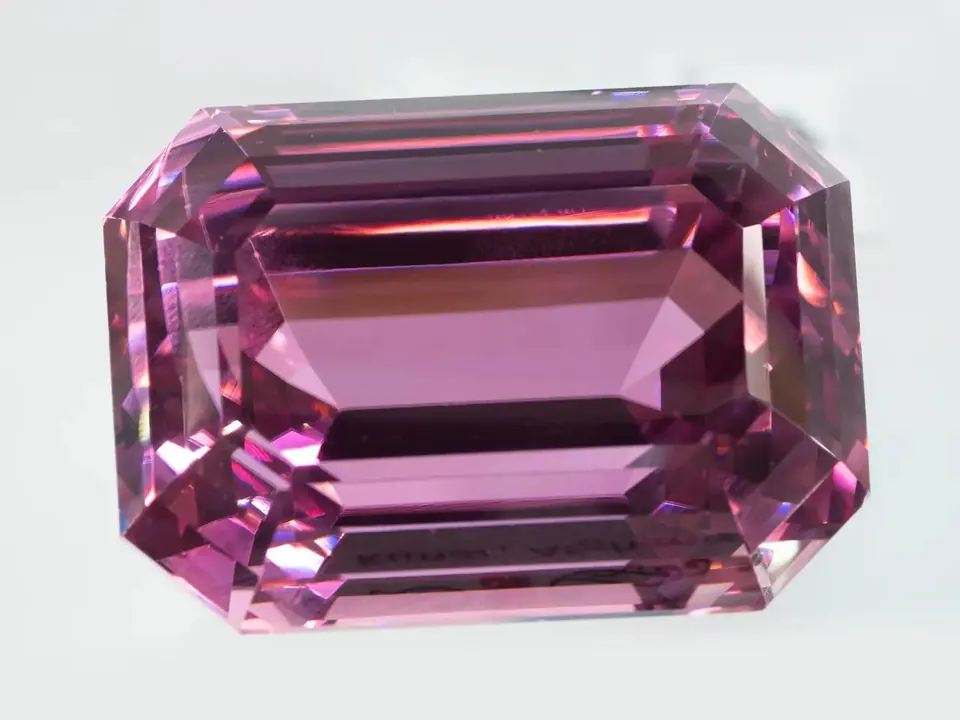

鋰輝石家族：紫鋰輝石與翠綠鋰輝石
鋰輝石家族有兩位明星：一位穿紫色長裙、怕陽光，一位穿翠綠禮服、少到博物館才見得到。

核心定義
鋰輝石（spodumene）是含鋰的矽酸鹽礦物，主要產於偉晶岩。家族中最著名的兩位：紫鋰輝石（kunzite，粉紫至紫）與翠綠鋰輝石（hiddenite，翠綠）——前者溫柔、後者稀有，都是收藏家的心頭好。
紫鋰輝石由錳致色、翠綠鋰輝石由鉻致色——兩者都有一個致命弱點：怕光。長時間日曬會讓顏色變淡，這在寶石中極少見。
特徵與分類
| 品種 | 顏色 | 致色元素 | 產地 | 特點 |
|---|---|---|---|---|
| 紫鋰輝石 | 粉紫/薰衣草紫 | 錳 | 阿富汗、巴西 | 大顆常見、怕光 |
| 翠綠鋰輝石 | 黃綠/翠綠 | 鉻 | 美國北卡羅來納 | 極稀有 |
| 普通鋰輝石 | 灰白/黃 | — | 全球 | 工業用鋰礦 |
紫鋰輝石常以「大克拉」出現——10 克拉以上並不罕見，價格卻因此「平民化」；翠綠鋰輝石則因產地單一、產量極少，是博物館級收藏。
科學原理
鋰輝石的顏色與「輻射」有關：天然紫鋰輝石需微量錳與適當輻射歷史才顯色——有些寶石商會用人工輻射加深顏色，但輻射後顏色往往不穩定。這是鋰輝石「怕光」的根源：高能光子會把致色中心打散，顏色就退了。
鋰輝石還有個特殊物理：解理極完全（two perfect cleavages）——受撞擊可能沿解理面裂開。加上硬度僅 6.5–7，它屬於「要溫柔對待」的寶石。
鑑定與鑑別方法
- 看多向色性：紫鋰輝石三色性明顯（紫/無色/粉）
- 測折射率：1.66–1.68
- 掂重量：比重 3.18，比石英重
- 光照測試：強光下長時間顏色變淡（謹慎操作）
- 證書：確認是否輻射處理
市場行情與保養建議
行情：紫鋰輝石 2026 年零售參考，大克拉（10ct+）每克拉約新台幣數百至兩千元，頂級濃紫（巴西/阿富汗）可到數千元一克拉；翠綠鋰輝石極稀有，出現即天價（單克拉新台幣數萬至數十萬元）。
提醒：紫鋰輝石適合「佩戴於夜間場合」——日常強光環境會加速褪色；收藏時避光保存。價格僅供參考，非投資建議。
常見誤區
顏色深淺與穩定性無關——再深的紫鋰輝石都怕強光。穩定的只有少數特定產地與切工。
翠綠鋰輝石與祖母綠顏色相近，但成分、硬度、折射率完全不同——綠色的石頭不一定是祖母綠。
冷知識
1902 年蒂芙尼的寶石學家 George Frederick Kunz 首度描述它——因此得名 kunzite。
hiddenite 以美國北卡羅來納州 Hiddenite 礦區命名——該地是它的唯一傳統產地。
反直覺觀點
鋰輝石是鋰的重要來源——現代手機電池裡的鋰，很多就來自鋰輝石礦。你戴的寶石，可能和你的手機是「同一個礦坑」出來的。
紫鋰輝石在燭光與燈光下最迷人——它天然屬於晚宴與派對，白天戴反而是浪費。